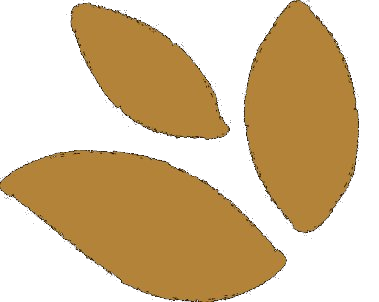
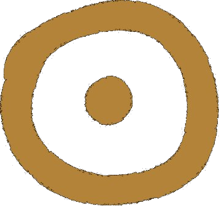
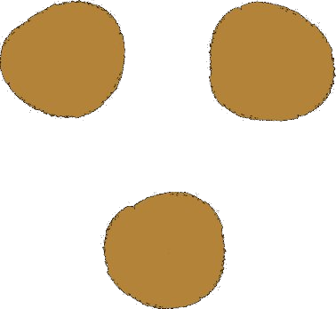
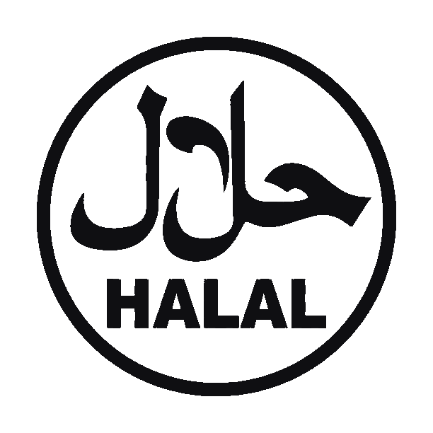
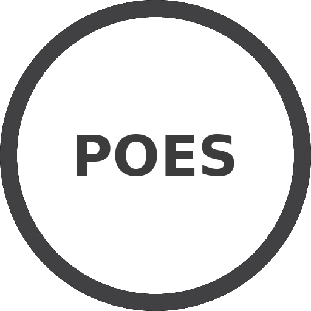

Valeurs
Engagement envers nos clients.
Éthique productive et commerciale.
Qualité tout au long du processus de production.
Engagement envers l'environnement.
Nous produisons des Protéines et Ingrédients Végétaux pour approvisionner l'Industrie Agroalimentaire.

Engagement envers nos clients.
Éthique productive et commerciale.
Qualité tout au long du processus de production.
Engagement envers l'environnement.

Valoriser la production primaire du soja et de ses dérivés pour l'alimentation humaine.

Être une référence régionale dans la production et la commercialisation de produits dérivés du soja, en exportant des aliments de qualité vers le monde entier.
Alimentos Texturizados S.A. met en œuvre diverses normes, procédures et protocoles pour obtenir des produits alimentaires de haute qualité et sûrs.
Notre processus est régi par les Bonnes Pratiques de Fabrication (BPF) et les Procédures Opérationnelles Standardisées d'Hygiène (POSH). Nous travaillons également à la mise en place d'un système d'Analyse des Dangers et Points Critiques pour leur Maîtrise (HACCP), afin d'offrir à nos clients confiance et sécurité dans nos produits SOY+.
Nous détenons les certifications KOSHER et HALAL, et notre système de travail est orienté vers la formation continue de notre personnel en HACCP.
Notre établissement est approuvé et enregistré par le SENASA. Nous disposons d'un Registre National d'Établissement (RNE) et d'un Registre National de Produit Alimentaire (RNPA), conformément aux réglementations en vigueur.

